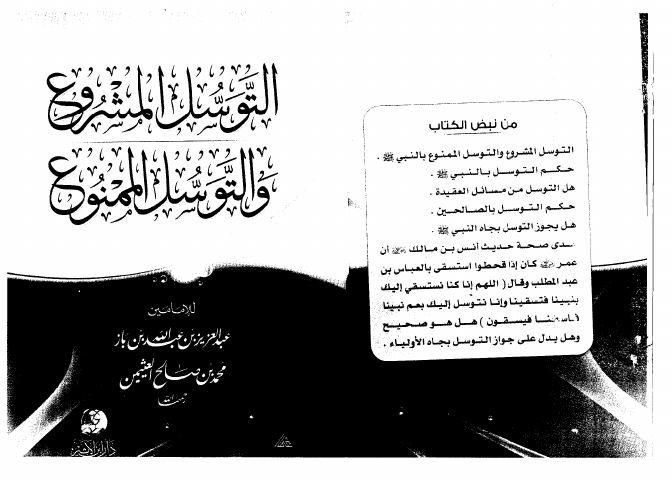

التوسل المشروع والتوسل الممنوع
Authors: عبد العزيز بن عبد الله بن باز ، محمد بن صالح العثيمين
Publishers: دار ابن الأثير
Download Downloads need an internet connection.
- Published
- 1428هـ 2007م
- Country
- الرياض، السعودية
- Edition
- 1
- Volumes
- 1
- Pages
- 42
- Type
- كتاب
- Category
- العقيدة والمذاهب والأديان
Description
**▫️ العنوان: التوسل المشروع والتوسل الممنوع** ▪️ المؤلف: #عبد_العزيز_بن_عبد_الله_بن_باز • #محمد_بن_صالح_العثيمين ▫️ الناشر: #دار_ابن_الأثير ▪️ تاريخ النشر: 1428هـ 2007م ▫️ بلد النشر: الرياض، #السعودية ▪️ الطبعة: 1 ▫️ عدد الأجزاء: 1 ▪️ الصفحات: 42 ▫️ نوع الوعاء: #كتاب ▪️ التصنيف الرئيسي: #العقيدة_والمذاهب_والأديان ۪